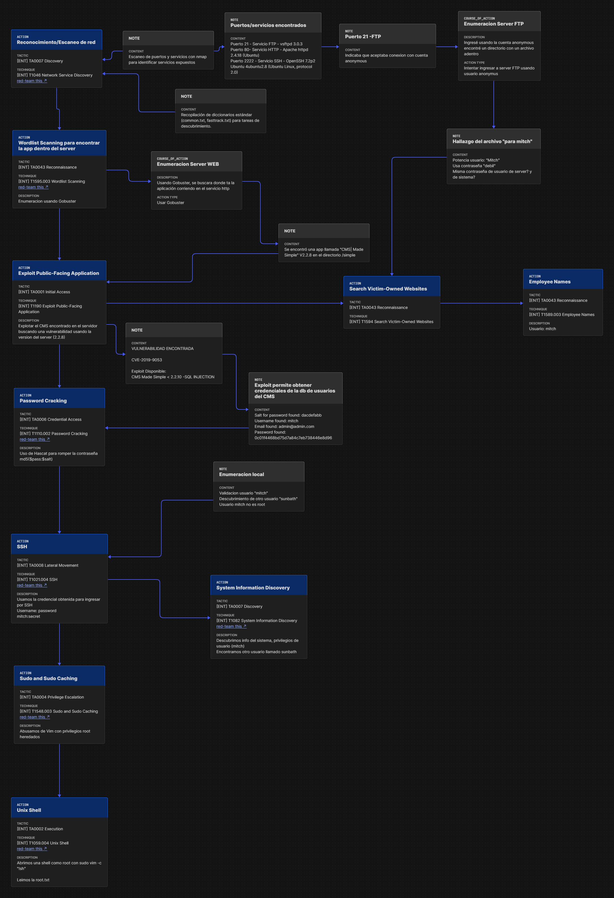

Pedro | Cyber Risk - Blue Team
Analista en Ciberseguridad orientado a la defensa activa, gobernanza, normativas y gestión de riesgos informáticos (Cyber Risk Insurance). Interesado en la convergencia entre el análisis técnico de amenazas y la responsabilidad legal.
---
🎯 Perfil/Áreas de Interés
- Cyber Risk \& Aspectos Legales: Transferencia de riesgo, pólizas de ciberriesgo, cumplimiento normativo y marcos de gobernanza (GRC).
- Blue Team \& Análisis Técnico: Respuesta a incidentes, análisis forense de tráfico de red y detección de malware / ransomware.
- Investigación \& Hardware: OSINT (Inteligencia de Fuentes Abiertas) y Electrónica general aplicada a la seguridad.
---
🔬 Laboratorios/Casos Prácticos
1. Bluesky Ransomware — Detección y Forense (CyberDefenders)
* Categoría: DFIR / Análisis de Malware
* Objetivo: Investigación de un incidente provocado por el ransomware Bluesky, analizando evidencias de ejecución, mecanismos de persistencia y artefactos en el sistema impactado.
* Habilidades aplicadas: Análisis de logs, identificación de indicadores de compromiso (IoCs) y alcance de cifrado.
---
2. Packet Maze — Análisis Forense de Red (CyberDefenders)
* Categoría: Network Forensics / Wireshark
* Objetivo: Inspección de capturas de tráfico (.pcap) para reconstruir comunicaciones maliciosas, extracción de payloads y detección de exfiltración de datos.
* Habilidades aplicadas: Protocolos de red (TCP/UDP, HTTP, DNS), filtrado avanzado en Wireshark y reconstrucción de sesiones.
---
3. Simple CTF — Análisis y Mapeo MITRE ATT\&CK (TryHackMe)
* Categoría: Threat Modeling y/ Pentesting básico
* Objetivo: Explotación controlada y análisis de la cadena del ataque a través de la metodología MITRE ATT\&CK para comprender la perspectiva del adversario (Red to Blue).
🗺️ Flujo Completo del Ataque (MITRE ATT\&CK)
| Fase del Ataque | Táctica (MITRE) | Técnica ID | Descripción del Evento / Herramienta |
|---|---|---|---|
| Reconocimiento | Reconnaissance | T1595 |
Escaneo de puertos y servicios con Nmap (FTP, HTTP, SSH) |
| Búsqueda de Nombres | Reconnaissance | T1589.002 |
Obtención del nombre de usuario objetivo (mitch) |
| Enumeración Web | Reconnaissance | T1595.003 |
Fuzzing con Gobuster para descubrir directorio /simple (CMS Made Simple) |
| Explotación Web | Initial Access | T1190 |
Explotación de vulnerabilidad SQL Injection (CVE-2019-9053) en el CMS |
| Cracking de Contraseñas | Credential Access | T1110.002 |
Uso de Hashcat para obtener la contraseña del hash extraído de la BD |
| Acceso Vía SSH | Lateral Movement | T1021.004 |
Conexión remota por SSH utilizando credenciales obtenidas (mitch) |
| Descubrimiento de Sistema | Discovery | T1082 |
Enumeración local de información del sistema y descubrimiento de usuario sunbath |
| Escalado de Privilegios | Privilege Escalation | T1548.003 |
Abuso de Sudo y Sudo Caching (ejecución de vim con privilegios root) |
| Obtención de Shell Root | Execution | T1059.004 |
Spawneo de una Unix Shell interactiva como usuario root para leer root.txt |

---
🛠️ Herramientas/Entornos
- Análisis \& Detección: Wireshark, CyberChef, herramientas OSINT.
- Marcos \& Metodologías: MITRE ATT\&CK, Gestión de Riesgos Cyber.